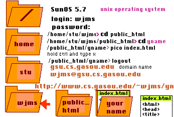

In the following. N will stand for Netscape and [[ N ]] will mean double click on Netscape whereas [ file ] means a single click on file.
- [[ N ]]
- add ~wjms/ to the URL
- reduce the size of Netscape
- [[ telnet ]]
- [ file ]
- [connect]
|  |
This is the directory tree on the Sun computer, here in the mathematics department.
The computer's name is gsu and it's full domain name is gsu.cs.gasou.edu where cs.gasou.edu stands for the Computer Science Department at Georgia Southern University. When you login, you join the tree at the red arrow. Today we will study the following unix commands. |
{ ctrl } means to hold the control key down.
When leaving pico- {ctrl} X
- y
- {<-| Enter}
- If you have ruined the file then type n {<-| Enter}
- Writing the file w/o leaving, {ctrl} O
To download files - [[ auto FTP pro ]]
- [ connect ]
- [[ public_html ]]
- [[yname]]
- [[ index.html ]]
- [ | ]
To log out of the Sun - logout {<-|}
- [ File ]
- [ eXit ]
- [ ok ]